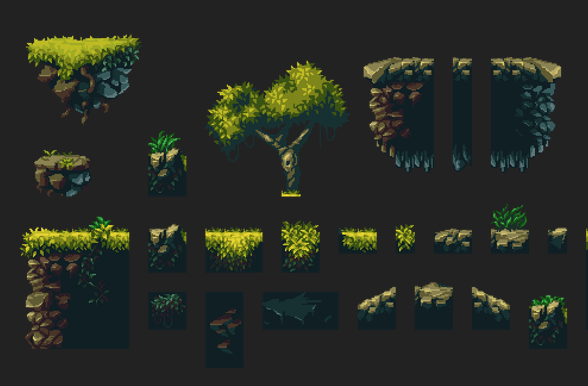
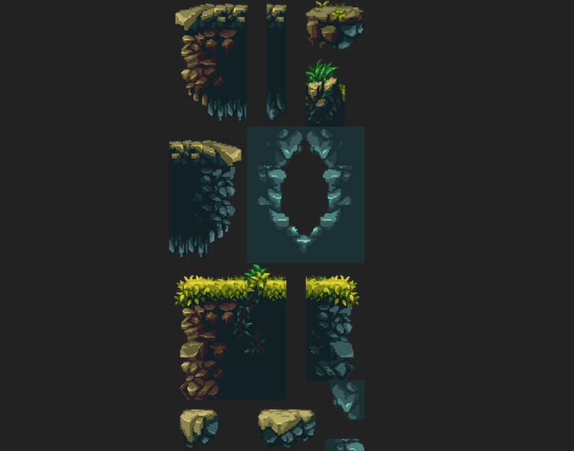
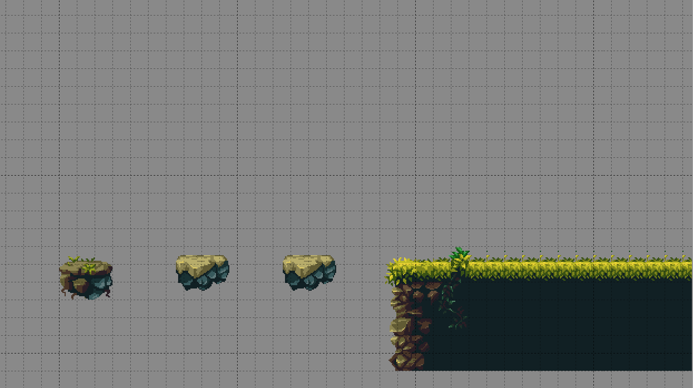
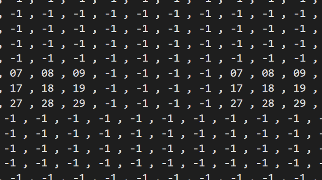

Side-Scrolling 2D Game
A 2D adventure game created using C++ for game logics and SDL2 to have low level access
to audio, keyboard, mouse, and graphics
A 2D adventure game created using C++ for game logics and SDL2 to have low level access
to audio, keyboard, mouse, and graphics
A cross-platform game engine such as Unity was not used, but rather an entity-component system to efficiently manage game world objects using modern C++ features. The code can be found here
Cross-platform development library designed to provide low level access to audio, keyboard and graphics. SDL2 allows us to port C++ code to many different operating systems. In this project, it was mainly used to mess with software rendering and tinker game engine programming :)
An algorithm runs through the animated tiles and displays a list of Sprites in sequence to create a frame-by-frame animation. A texture with a png file is passed as input only once, and different animations are displayed depending on the x-y coordinates selected.
The game engine handles user input as events. Every time a key is pressed, it runs an animation depending on the situation. For example, running, attacking, falling, etc. There are some animations that can be interrupted, such as running and attacking. However, other animations cannot be interrupted; this is the case of being hit by an enemy, this animation cannot be stopped until the player hits the ground :)
Online tilesets are used to build different maps
These tiles are first organized as a texture of 10x100 tiles ( 10 in the x-axis and 100 in the y-axis). It allows the algorithm to interpret tiles as positions in an image and map them based on coordinates. In fact, XYY is the format of the coordinates. For example, The tile 129 is 1 in x-axis and 29 in y-axis.
This is how a layer of a map is created.
Then this layer is translated to coordinates (using software) that the algorithm can interpret and render. It takes several layers to render a map; one for sky, for ground, objects and one for the ocean.
